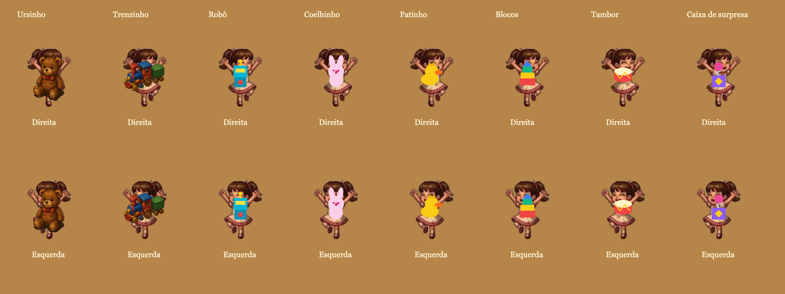
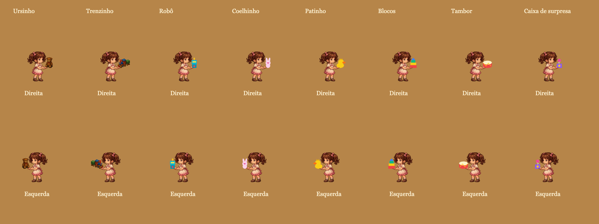
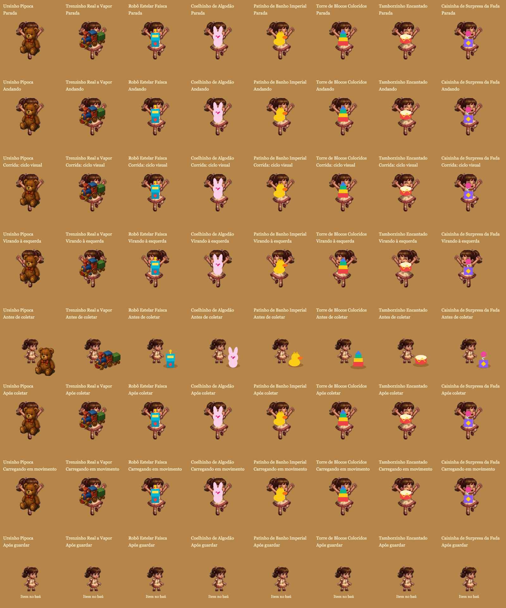
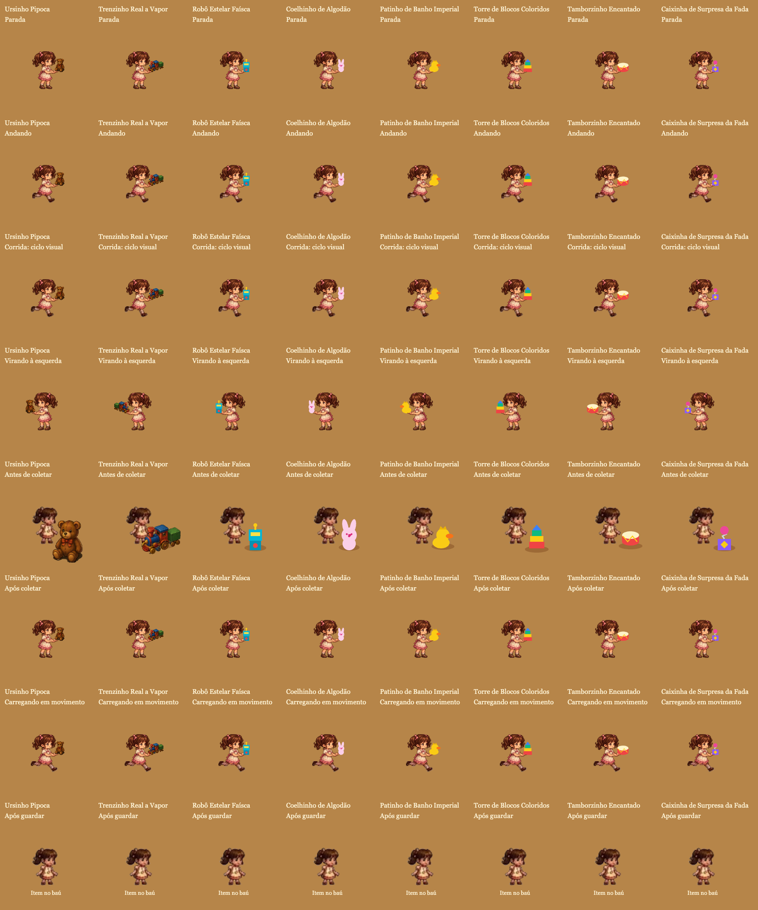
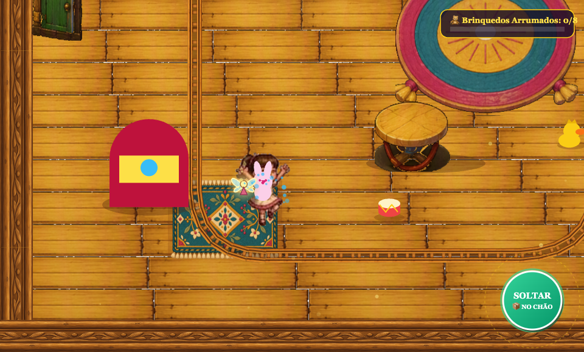
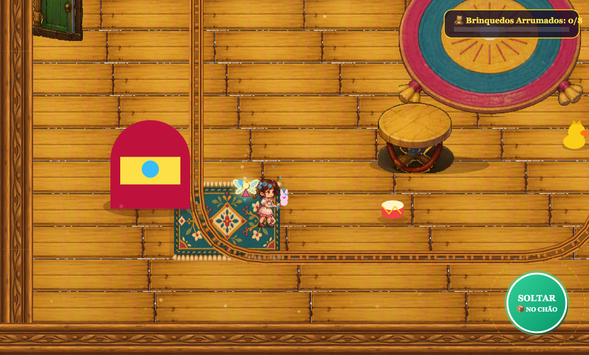

Correção 1 entregue para avaliação. Coelhinho, poltrona e cavalinho ainda não foram refeitos. Clique nas imagens para examinar em tamanho original.






As matrizes isolam a apresentação. Coleta, soltura, armazenamento, movimento e colisões foram exercitados também no controlador real. A fase tem uma única velocidade de movimento ponderada pelo peso; a linha “corrida” mostra outra fase da animação, sem acrescentar uma mecânica.